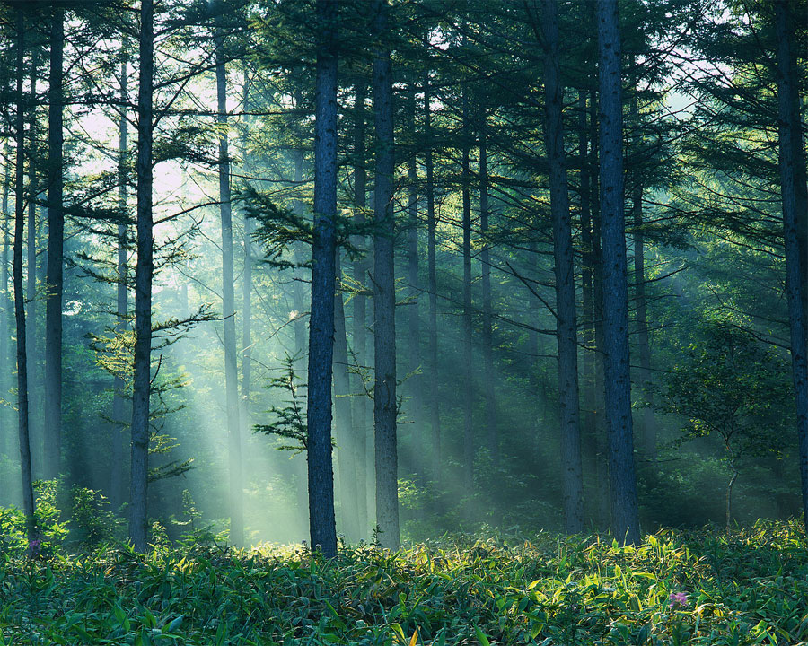
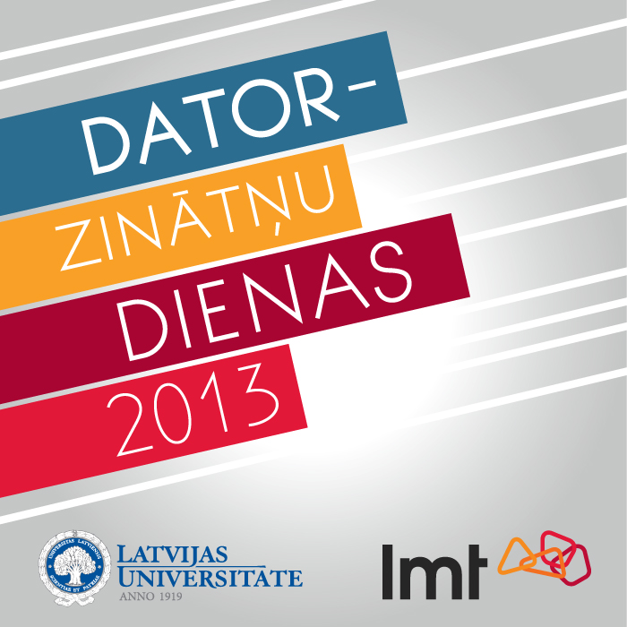
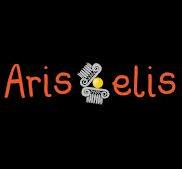

Meža pastaiga
02.02.2014
09:00
Pie Biķernieku meža ieejas
Gastranomu cīņas
14.09.2014
15:40
Esplanāde

Datorzinātņu dienas
06.08.2014 - 08.08.2014
Sporta kompleks "Ratnieki"
Lekcijas pašizaugsmei: 1.daļa – projektu vadība
06.03.2014
10:00 - 18:00
Raiņa bulvāris 19. Mazā aula

Aristotelis
01.09.2014
20:00
Doma laukums